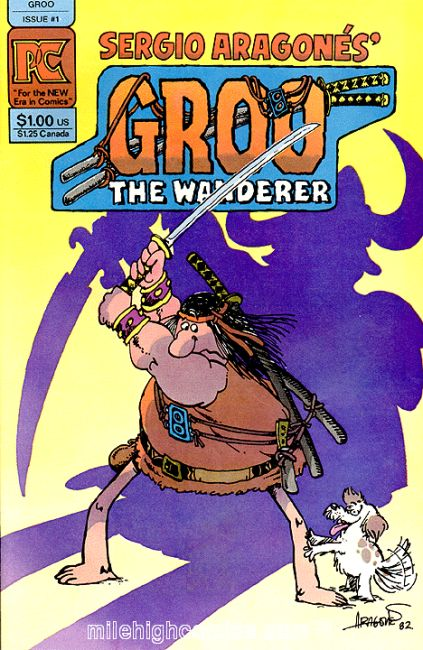

Groo

Creator: Sergio Aragonés
Series: 1982-1984 PC, 1985-1995 Marvel, 1998-2017 Dark Horse
Groo the Wanderer is a fantasy/comedy comic book series written and drawn by Sergio Aragonés, rewritten, co-plotted and edited by Mark Evanier, lettered by Stan Sakai and colored by Tom Luth. Over the years it has been published by Pacific Comics, Eclipse Comics (one special issue), Marvel Comics (under its Epic imprint), Image Comics and Dark Horse Comics.
Groo was one of the first widely successful creator-owned comics, one of the few successful humorous comic books in the United States (outside Archie Comics) during its time, and one of the longest-running collaborations in comic book history. In 2011 IGN ranked Groo 100th in the "Top 100 comic books heroes".
Pacific #1-8 (1982-1984):
Series Index:
- Groo Special #1 One shot intermediate printing - Eclipse (1984)
- Groo the Wanderer #1-120 (1985 - 1995) Epic/Marvel
- The Death of Groo Graphic Novel (1987) Epic/Marvel
- The Life of Groo Graphic Novel (1993) Epic/Marvel
- Groo #1-12 Image (1994-1995)
- Sergio Aragonés' Groo #1-4 (1998) Dark Horse
- Sergio Aragonés' Groo and Rufferto #1-4 (1998-1999) Dark Horse
- Sergio Aragonés' Groo: Mightier than the Sword #1-4 (2000) Dark Horse
- Sergio Aragonés' Groo: Death & Taxes #1-4 (2001-2002) Dark Horse
- Sergio Aragonés' Groo: 25th Anniversary Special (2007) Dark Horse
- Sergio Aragonés' Groo: Hell on Earth #1-4 (2007-2008) Dark Horse
- Sergio Aragonés' Groo: The Hogs of Horder #1-4 (2009-2010) Dark Horse
- Groo vs. Conan #1-4 (2014) Dark Horse
- Groo: Friends and Foes #1-12 (2015) Dark Horse
- Groo: Fray of the Gods #1-4 (2016) Dark Horse
- Groo: Play of the Gods #1-4 (2017) Dark Horse